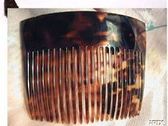
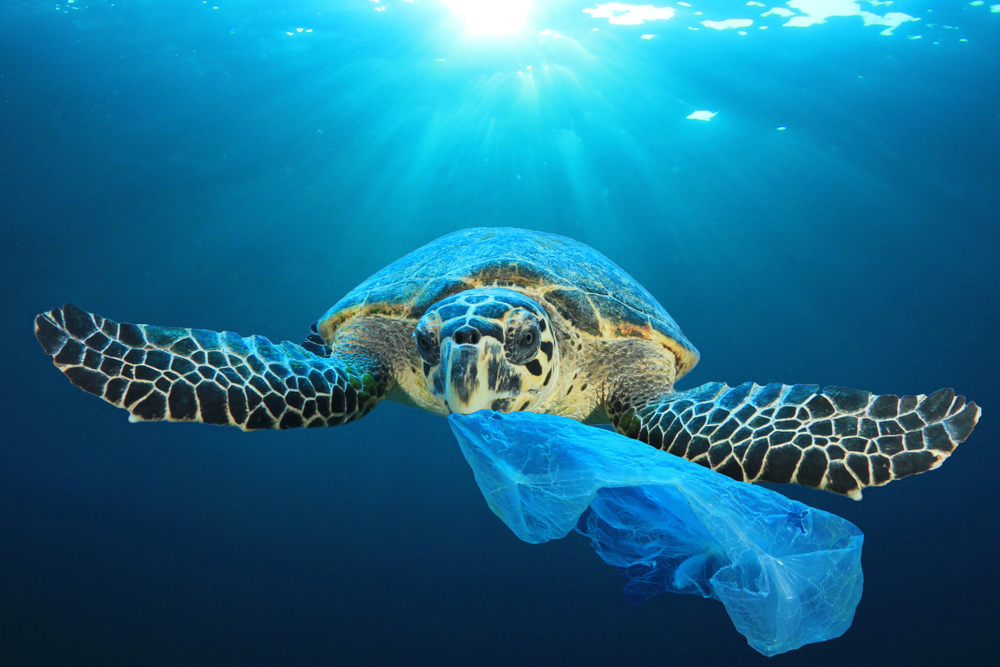
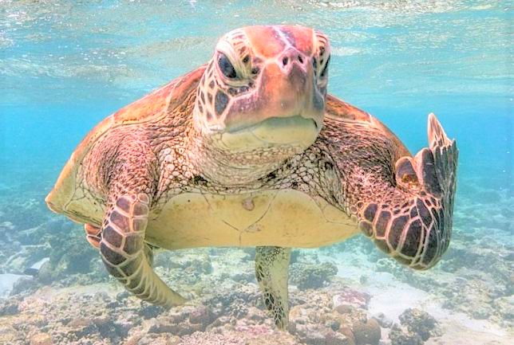
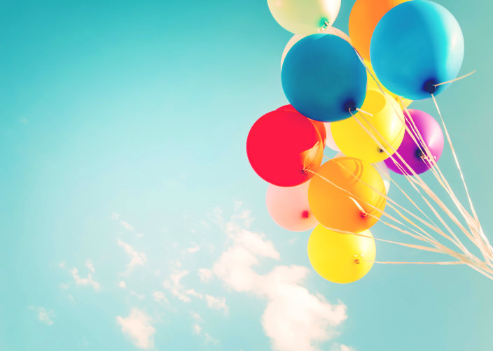
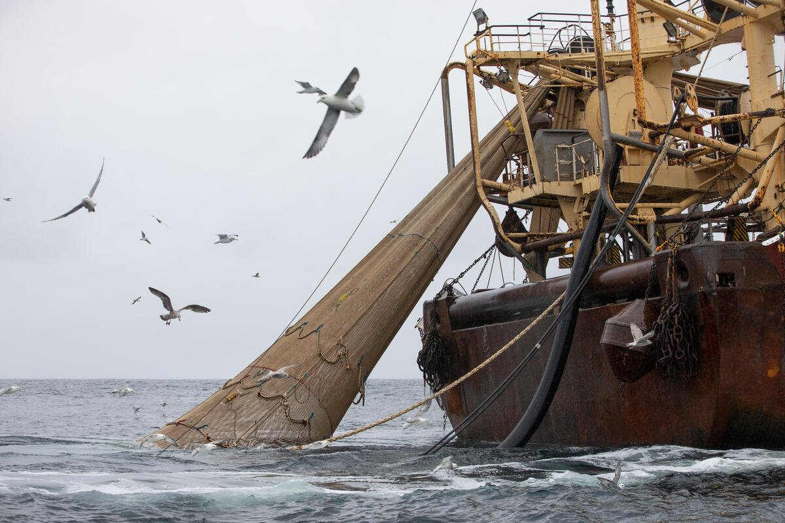
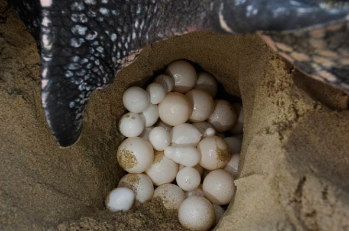
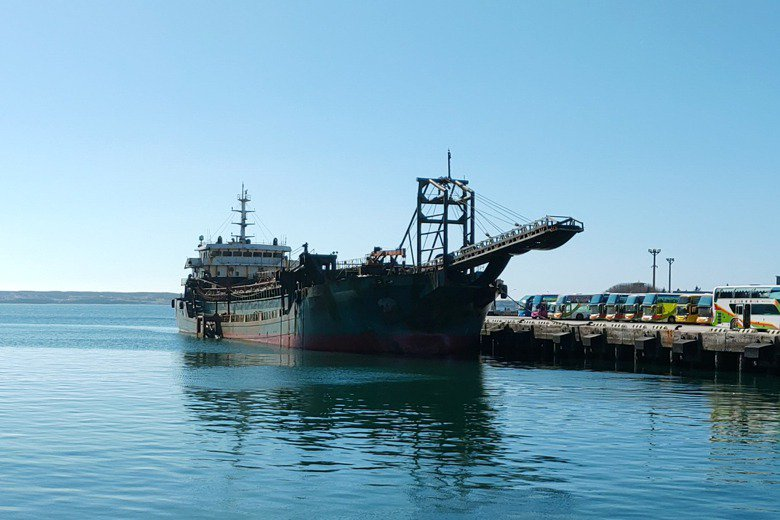
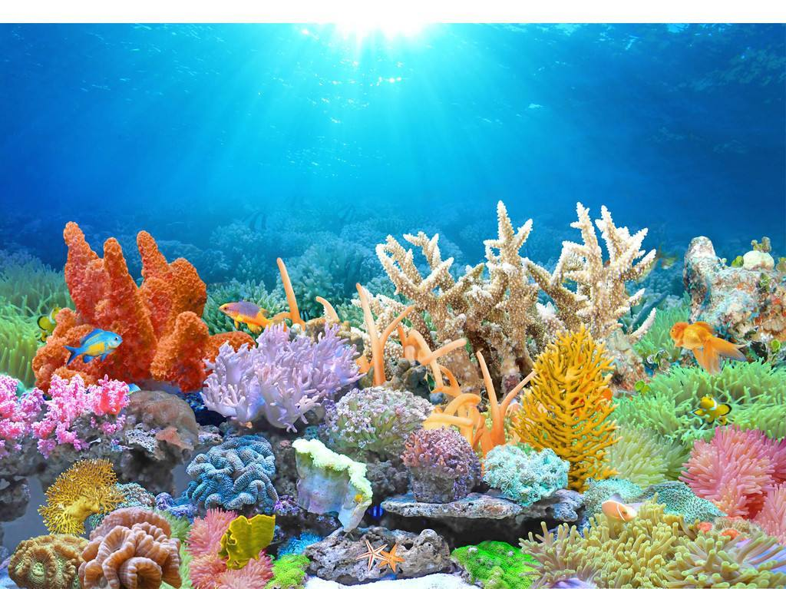

-

1. 不要買龜殼製品，或任何類似含有龜殼成份的產品。大部分龜殼乃來自被捕殺，
有時候要分辨真龜殼還是塑膠造的仿龜殼也不容易。無論如何，佩戴瀕危物種在身上絶非時尚，
而是殘忍、不必要和不當的。支持真正的時尚，遠離所有看似龜殼的東西！
連結
-

2. 使用環保袋，避免製造大量膠袋廢物。眾所周知，各種被棄置的塑膠對人及野生動物均造成嚴重的問題，
包括污染我們的海洋以至食水。玳瑁海龜亦會因為膠袋狀似食物 (水母或魷魚)而有危險，進食膠袋分分鐘會致命。
連結
-

3. 不要食用海龜、海龜蛋或磨成粉狀的海龜骨。不論是當作傳統中藥材、用來燉湯或煮其他菜式，
不要食用任何有玳瑁海龜成份的東西 (或其他海龜，因為幾乎所有海龜品種的野外數量都已被列為易危或瀕危的)。
連結
-

4. 不要放氣球。我知道這聽起來可能有點無稽，但跟被棄置的塑膠一樣，氣球的碎片在玳瑁海龜眼中也看似水母或
其他海洋生物。同樣地，玳瑁海龜有機會因吃下氣球碎片而死亡。
-

5. 在點餐或購買魚類及海鮮的時候，先問問哪些是否依從可持續方式捕撈或養殖的。海龜及海洋生物，好像海豚，
經常被意外捕撈，一起被撈進設計上根本沒法讓牠們逃生的網內。
而可持續發展漁業則會採用盡量減低意外捕撈其他生物的技巧和工具。
-

6. 千萬不要走近或騷擾玳瑁海龜挖巢穴產卵和孵化的地方，也不可行近或騷擾成年的海龜。
若果您在游泳、浮潛及潛水時，或者在海灘上有幸遇上海龜，不要走近牠們。至少保持50米以上的距離，
並謹記不可餵飼牠們。以上的不當行為會令牠們更加陷入瀕危的邊緣。
-

7. 乘船出海時要留意水中的海龜及其他海洋生物，不要駛近牠們。被船撞擊會嚴重危及海龜和其他海洋生物。
-

8. 協助保護及重建珊瑚礁！珊瑚礁是些許海龜棲息和覓食的地方，但暖化的大海和礁石的破壞，
令整個太平洋地區一半的珊瑚礁面臨嚴重的威脅。不要買用珊瑚製造的首飾或裝飾物，購買環保海鮮，並立即行動，減少您的碳足跡。